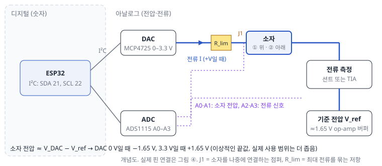
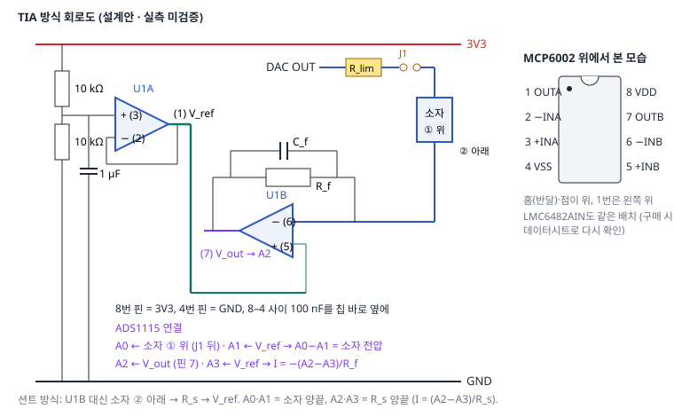

flowchart TB
subgraph P1["경로 1: 숫자로 바꾼 뒤 소자에 (디지털 중계)"]
direction LR
a1["AD8232 출력<br/>(아날로그)"] --> a2["ADS1115<br/>숫자로"] --> a3["ESP32<br/>R파 찾기·자르기"] --> a4["MCP4725 DAC<br/>다시 전압으로"] --> a5["소자 → 전류 측정"]
end
subgraph P2["경로 2: 아날로그로 바로 (near-sensor)"]
direction LR
b1["AD8232 출력<br/>(아날로그)"] --> b2["교류 결합 + 증폭·오프셋<br/>op-amp, V_ref 기준"] --> b3["아날로그 스위치<br/>ESP32는 켜고 끄기만"] --> b4["소자 → TIA → 판독만 숫자로"]
end
P1 ~~~ P2
B. 작은 보드로 독립 동작하는 시제품
DAC가 전압을 걸고, 작은 회로가 전류를 읽고, 보드가 저장된 가중치로 판단해 알린다
힌트오늘 할 첫 실험 — B1: ESP32에 첫 코드 올리기
- 준비물: ESP32 DevKitC(또는 호환) 보드 1개, 데이터용 USB 케이블, PC. 부품이 아직 없으면 Wokwi(브라우저 시뮬레이터)로 같은 연습을 할 수 있습니다.
- 걸리는 시간: 1–2시간 (드라이버 설치 포함).
- 끝나면 얻는 것: PC가 보드를 알아보고, 내가 쓴 코드가 보드에서 돌아 시리얼 모니터에 숫자가 찍힘.
- 오늘의 완료 기준: B1의 4단계까지 됨. 안 되더라도 어느 단계에서 어떤 메시지가 났는지 적으면 그날은 끝입니다.
- 남길 기록: 보드 이름, USB 칩(CP2102/CH340), COM 번호, Arduino IDE와 esp32 코어 버전.
이 프로젝트가 묻는 것: 소스미터·PC가 하던 측정과 판단을 작은 회로와 보드가 대신할 수 있는가, 그때 정확도·시간·에너지가 어떻게 달라지는가. 만드는 것은 저장된 입력을 재생해 소자에 걸고 판단·알림하는 브레드보드 시제품이며, 연속 ECG를 실시간으로 처리하는 장치가 아닙니다 (B8에서 따로 계산).
끝났다고 볼 때: B4에서 저항·RC 측정이 소스미터와 맞고(수준 2), B6에서 같은 저장 특징에 대해 보드와 Python의 점수가 일치하면 B는 끝입니다. 소자를 다시 측정한 정확도가 A와 같을 필요는 없습니다 (재측정하면 소자 상태가 달라질 수 있으므로, 그 차이 자체를 기록).
경고B의 코드·회로 상태
펌웨어(firmware/)는 컴파일도, 보드 업로드도, 실물 시험도 아직 하지 않았습니다. 회로는 설계안입니다. 아래의 보호 기능(입력 거부, 범위 밖 전압 거부, DAC 쓰기 실패 시 중단)도 코드에만 있고 실물에서 확인되지 않았습니다.
| 소스미터·PC가 하던 일 | B에서 맡는 것 | 다른 점 |
|---|---|---|
| 전압 걸기 | MCP4725 DAC + 1.65 V 기준 전압 | 범위가 좁고(이상적으로 ±1.65 V), 전원 켜질 때 상태를 직접 관리해야 함 |
| 전류 재기 | 션트 저항 또는 TIA + ADS1115 | 측정 범위·속도가 회로 값으로 고정됨 |
| 전류 제한(compliance) | 없음. 직렬 저항 R_lim이 최대 전류의 상한만 묶음 | 소스미터처럼 전압을 자동으로 낮추지 않음 |
| 펄스 순서·마스킹·판단 | ESP32 코드 | 실제 펄스 길이를 측정해 기록 |
기준 보드 정하기
이 단계의 어려운 부분은 MCU가 아니라 아날로그 측정 회로(전류 범위, 잡음, 속도)입니다. 비싼 보드가 미검증 회로 문제를 해결하지는 않습니다. 그래서 MCU는 예제가 가장 많은 것 하나를 기준으로 정하고, 측정 회로에 집중합니다.
| 후보 | 장점 | 확인할 것 / 상태 | 이 프로젝트에서 |
|---|---|---|---|
| ESP32 DevKitC (ESP32-WROOM-32E) | 아두이노 예제·라이브러리가 가장 많음, 블루투스·와이파이 | 클래식 ESP32 기준으로 코드 작성 | 기준 플랫폼 (코드 묶음의 펌웨어) |
| NU40 DK (구매 예정) | 제조사 안내에 따르면 nRF52840 기반, 아두이노 지원. 저전력 블루투스에 강점 | 정확한 revision, 핀 배치, 아두이노 코어 이름·버전, I²C 핀, BLE 라이브러리 — 제조사 페이지를 이번에 열지 못해 미확인 | B7(전력) 이후 저전력 판으로 옮길 후보. 아래 이식 목록 참고 |
| 계측 중심 대안: 전기화학용 AFE 평가보드(예: ADI AD5940/AD5941 계열), 소형 USB 퍼텐쇼스탯 모듈(예: PalmSens EmStat Pico) | nA 측정·전위 제어가 이미 검증된 하드웨어 | 사양·가격·소프트웨어·전압 범위 미확인 | 전류가 10 nA 아래로 작거나 브레드보드 TIA가 맞지 않을 때 연구비로 검토 |
NU40 DK로 옮길 때 바꿔야 하는 것 (ESP32 코드를 그대로 쓰면 안 됨): Wire.begin(21, 22) → 보드의 I²C 핀, ESP32 BLEDevice → nRF52용 BLE 라이브러리, Serial.printf 지원 여부, ESP32Servo → 보드에 맞는 Servo 라이브러리, GPIO 번호. 보드를 받으면 제조사 문서로 위 항목을 채운 뒤 하나씩 옮깁니다. 여러 보드용 코드를 동시에 만들지 않습니다.
구매 목록
가격은 구매할 때 다시 확인합니다. DIP(브레드보드에 꽂는 모양)가 편하지만 꼭 DIP일 필요는 없습니다. 표면실장(SMD) 칩도 변환 기판(breakout)에 올린 모듈이면 같이 쓸 수 있습니다. "A1 뒤" 부품은 A1의 전압·전류 범위를 본 뒤 정합니다.
| 단계 | 품목 | 추천·기준 | 수량 |
|---|---|---|---|
| 지금 | ESP32 개발보드 | ESP32-DevKitC V4 또는 호환. 핀헤더 납땜됨, USB 칩(CP2102/CH340) 확인 | 2 (예비) |
| 지금 | 브레드보드 830홀, 점퍼선(수-수·수-암), 길이별 고정 점퍼 키트 | 전원줄이 가운데 끊긴 제품 주의 | 각 2 |
| 지금 | 저항 키트 1% 금속피막, 세라믹·필름·전해 커패시터 키트 | 1 µF 필름 커패시터 몇 개 (RC 모의 소자용) | 1 |
| 지금 | 디지털 멀티미터 | 자동 범위, DC mV 0.1 mV, µA 범위 | 1 |
| 지금 | 데이터용 USB 케이블, LED·220 Ω, 2핀 점퍼(J1용) | 충전 전용 케이블은 업로드 안 됨 | 몇 개 |
| A1 뒤 | DAC 모듈 MCP4725 | 3.3 V 동작, 주소 표기, VOUT·VCC·GND·SDA·SCL 핀 이름을 모듈 실크로 확인 | 2 |
| A1 뒤 | ADC 모듈 ADS1115 | ADDR 핀, 모듈의 I²C 풀업 저항 유무 확인 | 2 |
| A1 뒤 | op-amp | 전류 ≥ 1 µA: MCP6002 (DIP-8). 10 nA–1 µA: 입력 바이어스 전류가 fA–pA인 제품(예: LMC6482). 그 아래: 위의 계측 중심 대안 | 각 3–5 |
| A1 뒤 | OLED SSD1306(I²C, 0x3C), 액티브 부저, USB 전력 측정기 | 전력 측정기는 해상도(mW·mA 단위)를 확인 | 각 1 |
| B8 | ECG 시뮬레이터 또는 데이터 재생 장치, AD8232 모듈 | 사람 연결은 B8의 별도 관문 | 1 |
구하는 곳: 디바이스마트, 엘레파츠, 아이씨뱅큐(모듈·공구), 메카솔루션·로봇사이언스몰(정품 보드·모듈), 디지키·마우저(정밀 칩). 납땜이 필요한 모듈이면 온도 조절 인두기·무연 실납·플럭스·보안경을 같이 삽니다.
B1. ESP32 첫 연결
- Arduino IDE 2 설치 → 파일 → 기본 설정 → 추가 보드 관리자 URL에
https://espressif.github.io/arduino-esp32/package_esp32_index.json. - 보드 관리자에서 esp32 by Espressif Systems(3.x) 설치. 보드 = ESP32 Dev Module.
- USB 연결 → 장치 관리자에 COM 포트가 생기는지 확인. 안 생기면 USB 칩에 맞는 드라이버(CP210x 또는 CH340).
- 아래를 올리고 시리얼 모니터(115200)에 숫자가 나오면 성공. 업로드가 "Failed to connect"면 BOOT 버튼을 누른 채 다시.
void setup() { Serial.begin(115200); }
void loop() { Serial.println(millis()); delay(500); }부품이 오기 전에는 Wokwi(브라우저 ESP32 시뮬레이터)로 연습할 수 있습니다.
B2–B3. DAC로 전압 만들고 ADC로 읽기
연결 (모듈 핀 이름은 제품마다 다르니 실크 인쇄로 확인): 두 모듈 모두 VCC→3V3, GND→GND, SDA→GPIO 21, SCL→GPIO 22. ADS1115의 ADDR→GND(주소 0x48). DAC VOUT → ADS1115 A0.
- 라이브러리 관리자에서 Adafruit MCP4725, Adafruit ADS1X15를 설치합니다.
- I²C 스캐너(예제 메뉴 또는 AI에게 요청)로 두 주소가 보이는지 확인합니다.
- DAC 코드 0, 1024, 2048, 3072, 4095를 내보내 멀티미터와 ADC 값을 비교합니다. 3V3 전원이 정확히 3.300 V가 아니어서 수십 mV 차이는 정상입니다. 양 끝(0 V·3.3 V 근처)은 출력이 끝까지 붙지 않을 수 있습니다 (출력 여유, headroom).
- 풀업 확인: 모듈마다 I²C 풀업 저항이 있으면 병렬로 합쳐집니다. 통신이 불안정하면 모듈 하나만 남기고 시험해 원인을 좁힙니다.
B4. 소자 구동·전류 측정 회로
4-1. 전압·전류 경로

DAC는 0–3.3 V만 낼 수 있습니다. 소자의 아래쪽 끝을 0 V 대신 기준 전압 V_ref ≈ 1.65 V에 붙이면 소자 전압 ≈ V_DAC − V_ref가 되어 음전원 없이 ±방향을 모두 걸 수 있습니다. 실제로 쓸 수 있는 범위는 DAC 출력 여유, op-amp 출력 범위, R_lim 전압 강하 때문에 ±1.65 V보다 좁습니다. 4-4에서 저항으로 잰 범위만 씁니다.
4-2. 전원·리셋·통신 실패 때 무엇이 걸리나
| 상황 | DAC 출력 | V_ref | 소자에 걸릴 수 있는 것 | 대책 |
|---|---|---|---|---|
| 전원 켜는 순간 | EEPROM에 저장된 코드를 펌웨어보다 먼저 출력 (공장 출하 값은 제품별 확인) | 0 V에서 1.65 V로 오르는 중 (수 ms) | 순간적으로 수 V 차이 가능 | J1을 빼 둔 채 켜기. B4_test의 e 명령으로 '소자 0 V' 코드를 EEPROM에 한 번 저장 |
| ESP32 리셋·업로드 중 | 마지막 값 유지 (DAC는 계속 전원을 받음) | 유지 | 마지막 펄스 전압이 계속 | 업로드 전 J1 빼기 |
| I²C 통신 실패 | 마지막 값 유지 | 유지 | 마지막 값 | 펌웨어는 시작 점검에 실패하면 구동하지 않음. 측정 중 실패는 J1로 끊기 |
| USB 뽑힘 | 꺼짐 | 꺼짐 | 커패시터 방전 동안 작은 전압 | — |
R_lim (전류 상한 저항): 이 회로에서 어떤 두 점 사이도 3.3 V를 넘지 않으므로, 소자가 완전히 합선돼도 전류 ≤ 3.3 V / R_lim 입니다. 예: R_lim = 33 kΩ이면 100 µA 이하. 대신 정상 동작에서도 I × R_lim만큼 소자 전압이 줄어듭니다. 예: 10 µA × 33 kΩ = 0.33 V. 그래서 소자 전압은 J1 뒤(소자 위쪽 단자)에서 A0으로 직접 재고, 분석에는 잰 값을 씁니다. R_lim은 compliance처럼 전압을 조절하지 않고, 상한만 묶습니다.
R_lim이 펄스를 느리게 만든다: 소자는 전극 계면 때문에 정전용량 C_dev가 클 수 있고, R_lim과 함께 충전 시간 상수 R_lim × C_dev를 만듭니다. 예: 33 kΩ × 0.5 µF(가정) ≈ 16 ms → θ = 50 ms 펄스의 앞부분 상당 시간 동안 소자 전압이 목표에 못 미칩니다. 그래서 보드는 펄스 끝마다 실제 소자 전압(V 줄)을 같이 기록하고, 목표에 도달하지 못했다면 R_lim을 줄이거나 θ를 늘립니다.
4-2a. 핀과 부호를 한 번에 대조하기
| ADS1115 입력 | TIA 방식에서 연결되는 점 | 션트 방식에서 연결되는 점 | 코드에서의 쓰임 |
|---|---|---|---|
| A0 | 소자 ① 위쪽 단자 (R_lim·J1 뒤) | 같음 | A0 − A1 = 소자 전압 (readDeviceV) |
| A1 | V_ref | 소자 ② 아래쪽 (= 션트 위쪽) | |
| A2 | TIA 출력 (MCP6002 7번 핀) | 션트 위쪽 (A1과 같은 점) | 전류 신호 (readCurrent_nA) |
| A3 | V_ref | V_ref (= 션트 아래쪽) | 시작할 때 V_ref를 재는 데도 씀 (ioBegin) |
| 약속 | 그림 | 코드 |
|---|---|---|
| 전류 +방향 | 소자 ① → ② (그림 ③의 화살표, +V일 때) | TIA: I = −(A2−A3)/R_f, 션트: I = +(A2−A3)/R_s → 둘 다 ①→②가 + |
| 소자 전압 + | ①이 ②보다 높음 (A1 그림 ①의 극성 약속과 같음) | A0 − A1 |
| DAC 코드 | DAC 출력 = V_ref + 목표 소자 전압 (전류가 없을 때) | dacCodeFor(v) = dacCodeForOutput(VREF + v) |
4-2b. 데이터시트와 대조할 값 (조건부)
아래는 일반적인 데이터시트 값입니다. 구매한 정확한 부품 번호의 데이터시트로 다시 확인하고, 다르면 그 값을 씁니다.
| 부품 | 항목 | 이 설계에서 가정한 것 | 조건·주의 |
|---|---|---|---|
| ADS1115 | 입력 핀 절대 전압 | 모든 입력이 0–3.3 V 안 (GND−0.3 V ~ VDD+0.3 V를 넘으면 안 됨) | 차동 범위(PGA)가 ±4.096 V여도 각 핀은 전원 범위를 넘을 수 없음 |
| ADS1115 | PGA 범위 | 전류: ±2.048 V(TIA) 또는 ±0.256 V(션트), 전압: ±2.048 V | 범위가 작을수록 한 칸이 작지만 넘치기 쉬움 |
| ADS1115 | 속도·다중화 | 최대 860회/초, 한 번에 한 입력쌍만 변환 → 쌍을 바꾸면 순서대로 | 신호원 임피던스가 크거나 입력 앞 RC 필터가 있으면 바꾼 직후 값이 덜 정착할 수 있음 → 저항·RC로 확인 |
| MCP4725 | 전원 켤 때 출력 | EEPROM에 저장된 코드 | 공장 출하 값은 제품별로 확인. 펌웨어가 돌기 전 출력 |
| MCP4725 | 출력 범위·정착 | 0–VDD 근처, 끝(0 V·3.3 V 근처)은 덜 붙을 수 있음, 정착 수 µs | 부하 전류·정전용량이 크면 더 느려짐 |
| MCP6002 | 출력 범위 | 전원 끝에서 수십 mV 안쪽까지 (부하 작을 때) | 부하 전류가 크면 여유가 줄어듦 → 포화 판정 여유 0.15 V |
| MCP6002 | GBW·오프셋·입력 바이어스 | GBW 약 1 MHz, 오프셋 수 mV, 입력 바이어스 pA 수준(상온) | 온도가 오르면 바이어스 전류 증가 |
| TIA | C_f 근사식 | 아래 4-3의 식 | op-amp를 이상적 1차 응답으로, C_in ≫ C_f로 본 근사. 실측(4-4)으로 확인 |
4-3. 전류 측정: 션트 또는 TIA

| 소자 전류 (A1 특성표) | 방법 | 핵심 |
|---|---|---|
| 1 µA – 1 mA | 션트 저항 R_s | 소자와 직렬로 R_s. I = (A2−A3) / R_s. ADS1115 ±0.256 V 범위(한 칸 7.8 µV) |
| 10 nA – 100 µA | TIA (transimpedance amplifier, 전류–전압 변환기) | op-amp의 − 입력이 V_ref에 붙어 있도록(가상 기준점) 피드백 R_f로 전류를 전압으로. V_out − V_ref = −I × R_f |
| 10 nA 미만 | 브레드보드로는 어려움 | 소스미터 유지, 위의 계측 중심 대안, 또는 소재·면적으로 전류 키우기 |
R_f 고르기: 출력이 전원 끝에 닿지 않도록 R_f ≈ 1.5 V ÷ 최대 전류. 예: 최대 10 µA → R_f = 150 kΩ. 이때 ADS1115 ±2.048 V 범위의 한 칸(62.5 µV)은 0.42 nA에 해당합니다.
포화: 전류가 약 1.5 V/R_f를 넘으면 op-amp 출력이 전원 끝에 붙고, 가상 기준점이 깨져 소자 전압도 계산과 달라집니다. ADC는 여전히 범위 안이라 숫자만 보면 모를 수 있어서, 펌웨어는 출력이 기준에서 1.5 V 이상 벗어나면 포화로 셉니다 (B5의 Q 줄).
C_f와 안정성 — R_f·C_f 값만으로 보장되지 않습니다. TIA는 입력에 붙은 용량(C_in: 소자의 큰 계면 용량 + 배선 + op-amp 입력)이 클수록 출력이 떨리기 쉽습니다. 출발점으로 쓰는 근사식:
C_f ≥ √( C_in / (2π · R_f · GBW) ) (GBW: op-amp의 이득-대역폭 곱, MCP6002 약 1 MHz)
예: C_in = 0.5 µF(가정), R_f = 150 kΩ → C_f ≥ 약 0.7 nF. 그리고 응답 시간(대략 5 × R_f × C_f)이 펄스 폭 θ보다 충분히 짧아야 합니다: 150 kΩ × 6.8 nF × 5 ≈ 5 ms ≪ 50 ms. C_in은 모르는 값이므로 실측으로 확인합니다 (4-4). op-amp 입력 오프셋(수 mV) 때문에 0 V에서도 전류가 0이 아니게 보일 수 있으니, 0 V에서 잰 값을 빼는 영점 보정을 합니다.
4-4. 저항·RC로 회로를 먼저 검증
- B4_test를 올리고 J1을 뺀 채 켭니다. 시리얼에
READY VREF=…가 나오는지 확인합니다. - DAC 출력 보정 (
c명령): 소자·저항을 빼서 열어 두고(J1은 꽂은 채)c를 입력합니다. 전류가 흐르지 않으면 R_lim에 전압이 걸리지 않아 A0 = DAC 출력이 되므로, 이때 잰 직선이 "DAC 코드 → DAC 출력 전압" 보정입니다. 전류가 5 nA 넘게 보이면 코드가 보정을 거부합니다. 출력된DAC_SLOPE·DAC_OFS를firmware/common/device_io.h에 넣고python sync_firmware.py로 각 스케치에 복사합니다.- 이 보정은 DAC 출력을 맞추는 것이지 소자 전압을 맞추는 것이 아닙니다. 소자에 전류가 흐르면 소자 전압 = DAC 출력 − V_ref − I × R_lim이 되고, 보드는 이것을 따로 재서 기록합니다 (되먹임으로 맞추지는 않음).
- 소자 자리에 100 kΩ 저항을 꽂고 →
s명령. −1~+1 V에서 "실제 전압 / 100 kΩ"과 측정 전류가 맞는지 봅니다. - RC 모의 소자(100 kΩ과 1 µF 필름 커패시터를 병렬로)로 바꿔 전압 계단을 걸고, 출력이 떨리지(발진) 않는지, 원하는 시간 안에 자리 잡는지 봅니다. 떨리면 C_f를 키우거나, 소자와 TIA 입력 사이에 작은 저항(1–10 kΩ)을 넣고 다시 봅니다.
- 회로 자체가 기억을 만들지 않는지: 저항으로 A1-3(쓰기–쉬기–읽기)을 하면 읽기 전류 차이가 없어야 합니다. 차이가 보이면 회로(C_f, 기준 전압 커패시터 등)가 만든 것입니다.
- 같은 저항·RC를 소스미터로도 재서 겹쳐 그립니다. 이 그림이 B의 첫 결과이고, 그 전까지 이 회로는 "설계안"입니다.
B5. 보드로 레저버 데이터 모으기
A에서 소스미터로 잰 값으로 학습한 가중치는 B 회로에서 맞지 않을 수 있습니다 (이득·오프셋이 다름). 그래서 B 회로로 다시 측정해 학습합니다.
준비 (python 폴더에서):
config_board_example.json을 복사해config_board.json으로 저장하고 고칩니다:device.id·env(바꿀 것),instrument.R_meas_ohm·R_lim_ohm= 실제로 꽂은 저항 값 (바꿀 것),v_limit_V= A1에서 정한 범위 안 (바꿀 것).encoding은 처음엔 그대로 둡니다.- 보드용
config.h를 설정 파일에서 만듭니다 (손으로 옮기지 않음):python tasks.py timing task.npz --n 40→python make_config_h.py config_board.json task.npz ../firmware/B5_collect. 화면에저장: …config.h (L=12, M=4)가 나오면 됩니다. - B5_collect를 올리고 시리얼 모니터에서
READY L=12 M=4 …가 보이면 시리얼 모니터를 닫습니다 (Python이 같은 COM 포트를 써야 하므로).
측정:
COM 번호는 장치 관리자 → "포트(COM & LPT)"에서 보드를 꽂을 때 새로 생기는 번호입니다.
python board_collect.py config_board.json task.npz runs/b_dev01 --port COM5 --limit 10
python board_collect.py config_board.json task.npz runs/b_dev01 --port COM5- 보드는 입력 줄의 길이·숫자 형식·범위(0–1)·개수·시간 초과를 검사하고, 하나라도 이상하면 소자를 구동하지 않고
E줄을 보냅니다. DAC 쓰기가 실패하면 0 V를 한 번 더 시도하고 멈춥니다. - 측정이 다 끝난 뒤에 결과를 한꺼번에 보냅니다 (보내는 시간이 펄스 타이밍에 섞이지 않게). 시행마다 다섯 줄이 옵니다:
| 줄 | 뜻 | 단위 |
|---|---|---|
| S | 펄스 끝 전류 (상태) | nA |
| V | 펄스 끝에 잰 실제 소자 전압 (A0 − A1) | V |
| P | 이 펄스의 DAC 명령 시작 → 다음 펄스 명령 시작 = 그 전압 명령이 유지된 시간 | µs |
| R | DAC 명령 시작 → 전류·전압 읽기 끝 | µs |
| Q | 측정 범위를 벗어난 읽기 수 | 개 |
시간 용어를 구분합니다. P는 "명령"이 유지된 시간이지 "소자에 목표 전압이 걸린 시간"이 아닙니다. DAC 출력이 정착하는 시간(수 µs)과 R_lim × 소자 정전용량의 충전 시간이 더해지기 때문입니다. 소자에 실제로 걸린 전압은 V 줄(펄스 끝 값)로 확인합니다. 펄스 중간의 전압 모양까지 알려면 B4-4처럼 따로 재야 합니다.
한계 (실물 미검증): ADC 통신이 끊기면 라이브러리가 변환 완료를 기다리며 멈출 수 있고(라이브러리 버전에 따라 확인 필요), 그동안 DAC는 마지막 전압을 유지합니다. 보드가 응답하지 않으면 J1을 먼저 빼고 리셋합니다.
B6. PC 없이 판단하고 알리기
python readout.py runs/b_dev01/checkpoint.npz task.npz --out b_model.joblib --end-only
python export_mcu.py b_model.joblib runs/b_dev01/manifest.json runs/b_dev01/checkpoint.npz ../firmware/B6_standalone --v-limit 1.0 --inputs task.npz- 두 번째 명령이
config.h,weights.h,ref_vectors.h,inputs_test.h를firmware/B6_standalone/에 새로 씁니다 (이진·다중 분류 모두 지원).--v-limit은config_board.json의 값과 같게. - B6_standalone를 올리면 먼저 저장된 특징으로 점수를 계산해 Python 점수와 비교합니다 (소자 사용 안 함). 시리얼의
R,…줄에FAIL이 없어야 다음으로 갑니다. "같은 숫자 → 같은 계산"의 확인이고, Python 쪽 계산 일치는 모의 시험으로 확인했습니다 (보드에서는 미검증). - 그다음 시험 입력을 하나씩 재생 → 측정 → 판단합니다. LED·부저·OLED에는 진단처럼 보이지 않게 클래스 번호만 표시하고, 클래스 0이 아니면 휴대폰(nRF Connect 앱)으로 알림을 보냅니다.
- 재측정 정확도는 B5 결과와 따로 비교·기록합니다.
전원은 처음에 USB 보조배터리를 씁니다. 리튬폴리머 셀을 직접 쓰려면 충전·보호 회로가 들어 있는 보드를 고르고, 맨 셀을 직접 배선하지 않습니다.
B7. 시간과 에너지를 공정하게 재기
| 무엇 | 정의 | 재는 법 |
|---|---|---|
| 전체 에너지 | 판단 하나 동안 전원에서 나간 에너지 (대기 포함) | USB 전력 측정기 mWh 차이 ÷ 판단 수 |
| 추가 에너지 | (처리 중 전력 − 대기 전력) × 처리 시간 | 같은 측정기, 대기·처리 구간 분리 |
| 소자 단자 에너지 | ∫ V_소자 · I dt (부호 포함) | 측정한 전압·전류로 계산 |
- 어디까지 포함했는지 적습니다: 쉬는 시간, 기준 전압 회로, 통신, 알림, (B8이면) ECG 모듈·R파 검출.
- USB 전력 측정기의 해상도(예: 1 mA 단위)로 처리 중·대기 차이를 구별할 수 있는지 먼저 봅니다. 구별되지 않으면 "측정 한계 이하"로 적습니다.
- 비교 대상: MCU만으로 같은 입력·같은 정확도 조건에서 판단할 때(예: 입력 25점에 같은 선형 분류기)의 시간·에너지.
에너지의 대부분은 ESP32·ADC·DAC가 쓰고 소자 몫은 작게 나올 가능성이 큽니다. 그렇게 나오면 판독 횟수를 줄이는 소자, 디지털화 전 처리, 깊은 절전이 왜 중요한지를 숫자로 보인 것입니다.
B8. ECG 신호로 (도전)
기본 경로: 사람 없이
ECG 시뮬레이터, 또는 두 번째 보드가 MIT-BIH 파형을 재생해 분압기(예: 100 kΩ : 100 Ω, 약 1/1000)로 mV 수준으로 줄여 AD8232 입력에 넣습니다. B8은 사람에게 연결하지 않고 끝낼 수 있게 되어 있습니다.
AD8232의 RL은 단순 접지가 아니라 오른다리 구동(right-leg drive) 출력입니다. 몸의 공통 전압을 능동적으로 맞춰 잡음을 줄이는 출력이므로, 시뮬레이터 연결도 제조사 안내대로 합니다.
경고사람 몸에 연결하는 것은 별도 관문
사람 연결에는 절연, 누설 전류, 전원·데이터 경로, 입력 보호 설계가 필요하고, 배터리로 바꾸거나 USB를 뽑는 것만으로 안전해지지 않습니다. 의료 전기안전에 경험이 있는 사람의 검토를 받은 뒤에, 연구 데이터로 쓸 경우 KAIST IRB 승인과 함께 진행합니다. 이 시제품과 AD8232 모듈은 의료기기가 아닙니다.
두 경로를 정확히 구분하기
- 경로 1: 소자는 디지털화 뒤의 보조 처리기입니다. 엣지 컴퓨팅이긴 하지만 "디지털화 전에 처리"하는 이점은 없습니다.
- 경로 2: 신호가 숫자가 되지 않고 소자에 들어가며, ADC는 레저버 상태만 읽습니다. 아날로그 스위치로 만든 마스킹(켜짐/꺼짐)은 DAC 마스킹(높이 조절)과 입력 모양이 다르므로 B6의 가중치를 그대로 쓸 수 없고 다시 측정·학습합니다.
연속 처리에 필요한 조건 (계산 먼저)
심장 박동은 약 0.6–1초마다 옵니다. 지금 설정(박동 하나 ≈ 7초)으로는 박동이 쌓이기만 합니다. 연속 처리하려면:
- 처리 시간 ≤ 박동 간격: L × M × θ + 쉬기 ≤ 약 0.6 s. 예: L=25, M=1, θ=20 ms → 0.5 s, 쉬기 없이. 그러려면 소자의 흔적이 20 ms 규모에서 의미 있게 변해야 합니다 (A1에서 확인할 것).
- ADS1115 변환 예산: 최대 860회/초는 모든 채널을 합친 예산입니다. ECG를 250 Hz로 읽으면서(경로 1) 펄스마다 전류도 읽으면 두 일이 같은 예산을 나눠 씁니다.
- 버퍼·누락 정책: 처리가 밀리면 어떤 박동을 버릴지 정하고, 그 비율을 기록합니다.
이 조건을 계산하고 만족하는 설정을 찾기 전에는 "실시간"이라는 말을 쓰지 않습니다.
문제 해결
| 증상 | 확인 순서 |
|---|---|
시작하자마자 E,-1,io_init |
I²C 주소(스캐너), SDA·SCL 바뀜, GND 연결, 기준 전압(A3)이 1.4–1.9 V인지 |
| 전류가 소스미터와 일정 비율로 다름 | R_f(R_s) 실제 값, DAC 보정 |
| 0 V에서 전류가 0이 아님 | op-amp 오프셋 → 0 V 값 빼기 |
| TIA 출력이 떨림 | C_f 키우기, 칩 옆 100 nF, 배선 짧게, 입력 직렬 저항 |
| Q 줄에 포화가 많음 | R_f 줄이기, 전압 범위 줄이기 |
R,…,FAIL |
헤더 파일이 서로 다른 학습에서 나옴 → export를 다시 하고 네 파일을 같이 복사 |
AI에게 맡길 때
기준 보드 ESP32 DevKitC, Arduino-ESP32 core [버전], Adafruit MCP4725 [버전], ADS1X15 [버전].
첨부한 device_io.h, B5_collect.ino, config.h가 컴파일 오류 [원문]이 나. 고친 전체 파일을 주고,
펄스 타이밍(runSequence)과 입력 검사 규칙은 바꾸지 말아 줘.내 소자 특성: 전압 범위 [ ], 전류 [최소]~[최대] A, 흔적의 시간 규모 [ ] s.
3.3 V 단일 전원에서 이 소자를 구동·측정하는 회로를 검토해 줘: R_lim, 션트/TIA 선택, R_f·C_f,
C_in을 모를 때 안정성 확인 절차, 출력 여유, 포화 판정. 계산 과정과 가정을 따로 적고,
데이터시트 근거가 없는 숫자는 표시해 줘.